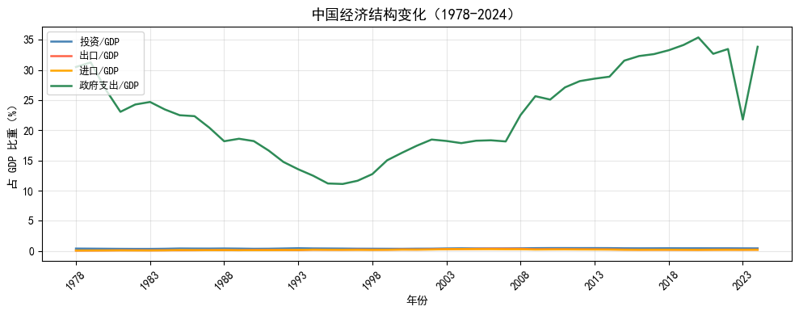
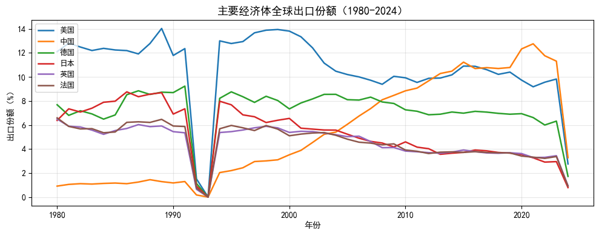
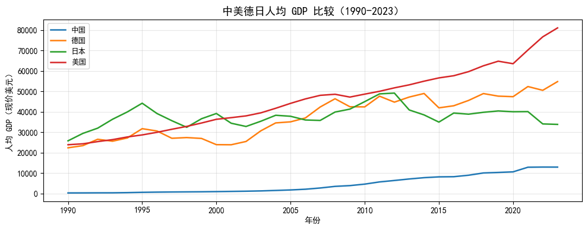

import pandas as pd
# 读取 CSV 文件——最常用的格式
df = pd.read_csv('./data/irm_QA_byd.csv')
# 读取 Excel 文件
# sheet_name 可以是 sheet 名称（字符串）或序号（整数，从 0 开始）
df = pd.read_excel('./data/China_province_GDP-1952-2024.xls', sheet_name='Sheet1')
# 读取 Stata 数据文件（.dta 格式）
# 做经济学研究时常见，许多学术数据集都是 .dta 格式
df = pd.read_stata('./data/mroz.dta')7 金融数据获取
做金融分析，数据是一切的起点。听起来像废话，但很多人在这一步就卡住了——不知道数据在哪里，不知道怎么拿，好不容易拿到了，又不知道从哪里开始看。
这一章就是要解决这些问题。我们不追求介绍所有数据源，而是选出几个覆盖面广、免费易用、在业界真正用得上的工具，配套完整的代码示例，让你能够直接上手。
本章的主线是：找到数据 → 读进 Python → 看清结构 → 画图确认。每一节都遵循这个逻辑。
| 节次 | 内容 | 核心工具 |
|---|---|---|
| Sec 1 | 数据在哪里？——数据源概览 | — |
| Sec 2 | 数据文件的读取 | pandas |
| Sec 3 | API 是什么？ | — |
| Sec 4 | 国内金融数据：akshare | akshare |
| Sec 5 | 全球宏观历史数据：GMD | pandas |
| Sec 6 | 国际宏观数据：世界银行 | worldbankdata |
| Sec 7 | 美联储数据：FRED（选修） | fredapi |
| Sec 8 | 数据平台与手动下载 | — |
运行环境说明
本章所有代码均基于 Anaconda 环境，涉及的数据接口全部免费开放，无需付费订阅。 如果你还没有配置好 Anaconda，请先参考第一章的环境配置说明。
7.1 数据在哪里？
在开始写代码之前，先花一点时间弄清楚：做金融分析，数据到底从哪来？
7.1.1 金融数据的现实格局
如果你将来进入投行、基金或券商的研究部门，第一件事大概是申请 Wind（万得） 的账号。Wind 是国内金融行业的标配数据终端，覆盖 A 股、债券、衍生品、宏观经济等几乎所有品种，数据质量高、更新及时，但价格也很贵——机构订阅费通常是每年数万元起。Bloomberg 在国际市场上扮演同样的角色，费用更高。
对于在校学生来说，CSMAR（国泰安数据库）是更现实的选择。中山大学校园网用户可以免费访问 CSMAR，它覆盖了 A 股的股票、财务、公司治理等主要数据，是国内学术研究最常用的金融数据库之一。
但即便没有 Wind 和 CSMAR，做金融分析也不是无路可走。近些年，一批免费的开源 Python 数据接口发展得相当成熟，能够满足大多数学习和研究场景的需求。本章的重点就是这些免费工具。
7.1.2 四类数据来源
把金融数据的来源归纳一下，大致有四类：
第一类：商业数据库。 Wind、Bloomberg、CSMAR、Refinitiv 等。数据质量最高，覆盖最全，自动更新，是业界标准。缺点是需要机构账号，个人使用成本很高。在学期间最好充分利用学校提供的访问权限。
第二类：开源 Python 数据接口。 以 akshare 为代表，另有 yfinance、tushare、baostock 等。这类工具将各大财经网站（东方财富、新浪财经等）的公开数据封装成统一的 Python 接口，免费使用，涵盖 A 股、期货、债券、宏观、加密货币等主要品种。虽然数据质量不如商业数据库，但对于学习和大多数研究来说已经足够了。本章重点介绍 akshare，它是目前最全面、更新最及时的免费金融数据接口。
第三类：国际官方机构 API。 世界银行、IMF、美联储 FRED、OECD 等机构都提供了官方的数据接口，免费开放，数据权威，特别适合做跨国宏观研究。世界银行覆盖 200 多个国家的经济发展指标，FRED 则是研究美国经济和金融市场绕不开的数据来源。
第四类：数据平台与学术数据库。 Kaggle 是机器学习竞赛平台，上面有大量整理好的金融数据集，非常适合课程作业选题。如果你在做论文，Harvard Dataverse、ICPSR 等学术数据库中存有大量顶刊论文使用过的数据，可以直接下载复现。
7.1.3 常用数据源汇总
下表列出了本课程会涉及的主要数据来源，供日后查阅参考：
国内金融与经济数据
| 数据源 | 主要数据类型 | 获取方式 | 备注 |
|---|---|---|---|
| CSMAR | A股/财务/宏观 | 手动下载 / API | 中大校园网免费 |
| akshare | A股/期货/债券/宏观 | Python API | 开源免费 |
| tushare | A股/宏观/财务 | Python API | 开源免费，需注册 |
| baostock | A股/财务 | Python API | 开源免费，数据较全 |
| 国家统计局 | 宏观经济指标 | 手动下载 | 官方数据，格式需整理 |
| 中国人民银行 | 货币金融数据 | 手动下载 | M2、利率、汇率等 |
国际宏观与金融数据
| 数据源 | 主要数据类型 | 获取方式 | 备注 |
|---|---|---|---|
| World Bank | 跨国宏观经济 | Python API | 覆盖 200+ 国家 |
| FRED | 美国宏观/金融 | Python API | 需免费申请 API Key |
| GMD | 全球宏观（历史深度） | CSV 下载 | 覆盖 1086 年至今 |
| yfinance | 美股/港股/加密货币 | Python API | 开源免费 |
学术数据与机器学习数据集
| 数据源 | 说明 |
|---|---|
| Kaggle | 机器学习竞赛数据集，适合课程作业选题 |
| Harvard Dataverse | 顶级期刊（AER、QJE、JF 等）论文复现数据 |
| ICPSR | 密歇根大学社会科学数据档案库 |
| Replication WIKI | 经济学论文复现项目列表，包含数据链接 |
| EJD, Sebastian Kranz | 13000+ 篇经济金融论文的复现数据和代码 |
| UCI ML Repository | 经典机器学习数据集仓库 |
论文复现数据：比你想象的更有用
很多同学做论文时苦于找不到合适的数据。其实，几乎所有在 AER、QJE、JPE、JF、JFE 等顶刊发表的论文，作者都会将使用的数据和代码上传到期刊配套的数据库中，供读者下载和复现。
这些数据不仅质量高，而且往往已经经过了严格的清洗和整理，是很好的分析素材。如果你对某篇论文的研究问题有兴趣，直接下载它的数据来做延伸分析，往往比从头收集数据省力得多。
详细的论文复现数据网站列表，参见：连享会 No.232：论文重现复现网站大全。
7.2 数据文件的读取
有些数据不需要写代码调接口，直接从网站下载一个文件就行。无论是从 CSMAR 下载的 A 股数据、国家统计局导出的宏观指标，还是 Kaggle 上的比赛数据集，最终都是以某种文件格式落在你的硬盘上。这一节介绍如何把它们读进 Python。
pandas 是 Python 数据分析的核心库，针对几乎所有常见的表格格式都提供了对应的读取函数：pd.read_csv()、pd.read_excel()、pd.read_stata() 等。用法十分相近——告诉它文件在哪，它就能把数据读成一个 DataFrame 返回给你，后续的分析都在 DataFrame 上进行。
7.2.1 先想清楚：用 CSV 还是 xlsx？
在实际工作中，你会不断地在 .csv 和 .xlsx 之间做选择。很多人习惯用 Excel，但在 Python 数据分析的场景里，优先选择 .csv 是更专业的实践。原因有三：
第一，速度。.csv 是纯文本格式，Python 读取时不需要解析任何格式信息，速度远快于 .xlsx。数据量小的时候感觉不出来，但对于十万行以上的数据，这个差距会非常明显。
第二，兼容性。.csv 不依赖任何软件，任何文本编辑器都能打开，跨平台、跨语言通用。.xlsx 格式相对复杂，有时不同版本的库读出的结果会有细微差别，在团队协作或自动化流程中容易出问题。
第三，简单即可靠。.xlsx 的多 Sheet、单元格格式、公式等功能在数据分析过程中几乎用不到。功能越复杂，出问题的可能性越大。
当然，.xlsx 也有它的用武之地——当你需要把分析结果整理成报告给领导或客户看时，Excel 的格式功能很有价值。但在分析过程中的数据存储，统一用 .csv 就好。
因此，如果你从 Wind 或 CSMAR 下载数据时有格式选项，请选 .csv。
7.2.2 读取本地文件
最基本的场景：文件已经下载到本地，用 pandas 读进来。
路径问题是初学者最常见的报错来源。上面的代码假设你的工作目录下有一个 data 文件夹，文件放在里面。如果出现「文件找不到」的报错，先用下面的代码确认当前工作目录在哪：
import os
# 查看当前工作目录
print(os.getcwd())
# 如果需要，切换到你的项目目录
# Windows 路径用双反斜杠，或者在字符串前加 r（raw string）
# os.chdir(r'D:\projects\finance_analysis')7.2.3 在线读取数据
很多数据集直接存放在网络上，尤其是 GitHub 上的公开数据。pd.read_csv() 可以直接接受一个 URL 作为路径参数，省去先下载、再读取的步骤——这在教学环境里非常方便，大家可以运行同一段代码，读取同一份数据，无需提前分发文件。
需要注意的是，如果是 GitHub 上的文件，要使用原始文件（Raw）的链接，而不是 GitHub 页面的链接。在 GitHub 上打开文件后，点击右上角的 “Raw” 按钮，复制地址栏中的 URL 即可。两者的区别很直观：页面链接以 github.com 开头，而 Raw 链接以 raw.githubusercontent.com 开头。
import pandas as pd
# 使用 GitHub raw 链接直接读取 CSV，无需下载到本地
url = "https://raw.githubusercontent.com/lianxhcn/ds_data/main/Chinese_resume/Chinese_resume_data.csv"
df = pd.read_csv(url)
print(f'数据规模：{df.shape[0]} 行 × {df.shape[1]} 列')
df.head(3)7.2.4 在线读取 .dta 文件：一个常见的坑
pd.read_stata() 理论上也支持直接传入 URL，但实际使用中经常出问题。原因在于，pd.read_stata() 本身并不处理 HTTP 请求的细节——它不会模拟浏览器的请求头，也无法应对服务器返回的各种非标准响应。一旦服务器拒绝了这个「非浏览器式」的访问请求，读取就会失败，而且报错信息往往让人摸不着头脑。
更稳健的做法是：先用 requests 库手动发送 HTTP 请求下载文件内容，再用 BytesIO 把字节流包装成一个类似文件对象的东西，最后传给 pd.read_stata()。这样可以完全控制请求过程，灵活处理各种情况。
from io import BytesIO
import requests
import pandas as pd
url = 'https://www.stata-press.com/data/r17/auto.dta'
# 设置 User-Agent，模拟浏览器访问，大多数服务器不会拒绝这种请求
headers = {'User-Agent': 'Mozilla/5.0'}
# 发送 GET 请求，timeout=30 表示超过 30 秒无响应则放弃
resp = requests.get(url, headers=headers, timeout=30)
# 如果服务器返回错误（如 404 Not Found、403 Forbidden），
# raise_for_status() 会直接抛出异常，便于快速定位问题
resp.raise_for_status()
# BytesIO 把字节内容包装成「文件对象」
# pd.read_stata 就能像读取本地文件一样正常工作了
df = pd.read_stata(BytesIO(resp.content))
df.head(3)这个「requests.get + BytesIO + pd.read_xxx」的组合是在线读取各类二进制格式文件的通用模式，不局限于 .dta。以后遇到 .xlsx、.parquet 等格式在线读取出问题时，同样可以用这个思路来解决。
7.2.5 数据读入后：先看清楚再动手
数据读进来了，很多人的第一反应是马上开始分析。但这往往是个坏习惯——如果数据本身有问题（格式读错了、日期列被识别成字符串、某些行莫名其妙是 NaN），在没有察觉的情况下继续分析，最终得到的结果很可能是错的，而且很难发现错在哪里。
花三分钟先看清楚数据，能帮你避免大量后续的麻烦。以下四个命令构成一套标准的数据探查流程，每次读入新数据时都建议执行一遍：
# 沿用上面读入的 auto 数据集
# 第一步：数据规模——有多少行、多少列？
# 这是最基础的检查，确认数据没有在读取过程中丢失行或列
print(df.shape)# 第二步：数据长什么样——前几行有什么内容？
# 这一步让你直观看到数据结构，判断读取是否符合预期
df.head(5)# 第三步：变量类型和缺失情况
# 重点看两件事：
# 1. dtype 列：类型有没有识别错误？（如日期被识别为 object）
# 2. Non-Null Count 列：每个变量有多少非缺失值？
df.info()# 第四步：数值分布——范围是否合理？有没有明显的异常值？
# 比如某个「年龄」变量最小值是 -999，十有八九是缺失值的代码，需要处理
df.describe().round(2)这四步的顺序有其内在逻辑：先知道「有多少」，再看「长什么样」，接着确认「类型和完整性」，最后检查「数值是否合理」。每一步都有可能暴露出问题。
如果需要聚焦到部分变量，可以先做筛选再调用 describe()，还能指定只显示你关心的统计量：
# 只看感兴趣的变量，只显示需要的统计量
vars_to_check = ['price', 'mpg', 'weight', 'length']
stats_to_show = ['count', 'mean', 'std', 'min', 'max']
df[vars_to_check].describe().loc[stats_to_show].round(2)
AI 提示词：数据读取与探查
遇到格式不熟悉的文件，或者不确定如何处理路径、编码等问题，可以把文件情况描述给 AI，让它生成代码：
我有一个
[文件名及格式，如 stock_data.csv]文件，存放路径为[路径]。请帮我写一段 Python 代码，使用 pandas 读取这个文件，完成以下数据探查：(1) 输出数据的行列数；(2) 展示前 5 行；(3) 检查各变量的类型和缺失值情况；(4) 输出数值型变量的描述性统计（保留 2 位小数）。请加上简洁的中文注释，代码适配 Anaconda 环境。
中文乱码是读取国内数据时最常见的问题之一。如果出现乱码，可以补充说明，让 AI 帮你尝试 utf-8、gbk、gb2312 三种编码（中文数据文件最常见的三种）。
7.3 通过 API 获取数据
7.3.1 为何要通过 API 获取数据？
从网站手动下载文件，虽然简单，但有明显的局限：数据是静态的，下载之后就不再更新；如果需要不同时间段、不同股票的数据，就要反复操作，效率很低。
更好的方式是通过 API（Application Programming Interface，应用程序编程接口） 直接从数据源实时获取数据。
API 的工作原理：像“扫码点餐”一样简单
API 是数据提供方开放的一个 “数据窗口” 或 “点餐系统”。它定义了一套标准规则，让你的程序能够方便、安全地从远程获取所需的数据或服务，而无需了解对方复杂的内部系统。
一个完整的 API 调用过程，就像一次餐厅扫码点餐：
| 步骤 | 扫码点餐场景 | API 对应概念 | 说明与参数示例 |
|---|---|---|---|
| 1. 找到入口 | 扫描5号桌的二维码，进入点餐页面。 | Endpoint (端点) | API的特定网址（URL），即数据的“获取地址”。 |
| 2. 表明身份 | 出示会员卡（或登录账户）。 | API Key (密钥) | 一串用于身份验证的唯一字符串，证明你有权访问数据。 |
| 3. 提出请求 | 勾选菜品、选择口味、点击提交。 | Request (请求) | 你的程序向服务器发出的“我要数据”的指令。 |
| 4. 说明要求 | 菜品：酸菜鱼，口味：微辣，不要香菜。 | Parameters (参数) | 附加在请求中的具体条件，用于精确筛选数据。 |
| 5. 接收结果 | 厨师做好菜，服务员将酸菜鱼端到你桌上。 | Response (响应) | 服务器处理请求后，返回给你的结构化数据包（通常是JSON格式）。 |
用代码表示这个“点餐请求”可能如下：
# 这是一个类比，并非真实API代码
api_request = {
"endpoint": "https://api.restaurant.com/order",
"api_key": "your_secret_key_12345",
"parameters": {
"table_number": 5,
"dish": "酸菜鱼",
"spiciness": "微辣",
"no_coriander": True
}
}
# 发送这个请求后，你将收到一份做好的“酸菜鱼”（数据）。通过上面的例子，我们可以理解为何要用 API 获取数据：
- 实时动态：数据直接来自源头，是最新状态。
- 高效自动：无需手动重复下载，可集成到代码中自动运行。
- 精准灵活：通过参数自由定制所需数据的内容、范围和时间频率。
简言之，API 将复杂的后台数据服务，封装成一个简单的、菜单式的接口。你只需要发送一个格式规范的「订单」(请求)，就能坐等接收打包好的「菜品」(数据)。
7.3.2 金融数据 API 的通用调用流程
不同数据源的 API 在细节上各有差异，但调用逻辑基本一致，可以归纳为四步：
① 安装并导入对应的 Python 库
② 指定参数：想要什么数据、哪个时间段、哪个国家/股票……
③ 调用函数，发送请求
④ 接收返回的 DataFrame，开始分析以后你会发现，不管是 akshare、世界银行 API，还是 FRED，代码结构都是这个样子，只是函数名和参数不同而已。理解了这个通用模式，学任何新的数据接口都会很快上手。
免费 API 的使用限制
免费开放的 API 一般有两类限制需要注意：
一是访问频率限制。大多数 API 不允许短时间内发送太多请求，否则会被暂时封禁。在实际使用中，如果需要批量获取大量股票的数据，最好在循环中加入适当的等待时间（如 time.sleep(0.5)）。
二是数据用途限制。以 akshare 为例，其官方声明数据”仅限于学术研究用途”，不构成任何投资建议。在课程和研究中使用完全没有问题，但需要了解这一边界。
7.5 全球宏观历史数据：GMD
7.5.1 为什么需要 GMD？
世界银行、IMF 等国际机构虽然提供了覆盖面广的宏观数据，但它们的历史深度有限——大多数指标只能追溯到 1960 年代。如果你想研究大萧条对各国经济的冲击、两次世界大战之间的贸易格局变化，或者更长周期的经济发展规律，这些数据库就显得捉襟见肘了。
全球宏观数据库（Global Macro Database，GMD） 就是为了填补这个空白而生的。它由普林斯顿大学 Müller 教授团队开发，整合了来自 32 个主要国际组织和 78 个历史数据集的资料，构建了一个覆盖 243 个国家、46 个宏观变量的年度时间序列数据库，时间跨度从 1086 年延续至 2024 年，并包含对 2025-2030 年的预测。
更难得的是，GMD 完全开源免费，且团队承诺持续更新。
扩展阅读
连小白, 2025, GMD：最新全球宏观数据库-243个国家46个宏观变量, 连享会 No.1559.
7.5.2 GMD 涵盖哪些变量？
GMD 的 46 个变量覆盖了宏观经济分析的主要维度，常用的包括：
| 变量名 | 含义 |
|---|---|
gdp |
GDP（本币） |
gdp_USD |
GDP（美元） |
gdppc |
人均 GDP |
inf |
通货膨胀率（%） |
unemp |
失业率（%） |
inv_GDP |
投资占 GDP 比重（%） |
govexp_GDP |
政府支出占 GDP 比重（%） |
exports_GDP |
出口占 GDP 比重（%） |
imports_GDP |
进口占 GDP 比重（%） |
exports |
出口总额（本币） |
USDfx |
对美元汇率 |
debt_GDP |
政府债务占 GDP 比重（%） |
完整变量列表和定义请参考 GMD 官方网站 或数据文件中的 variable 列。
7.5.3 获取数据
GMD 的获取方式很简单：直接从官网下载一个 CSV 文件，一次性拿到全部数据，之后从本地读取即可。文件约 9MB，下载需要十几秒钟。
import pandas as pd
import os
# ── 第一次运行：从官网下载数据并保存到本地 ──────────────
# 文件约 9MB，下载需要 10-15 秒，请耐心等待
# 下载完成后，后续运行只需从本地读取，无需重复下载
url = "https://www.globalmacrodata.com/GMD.csv"
# 如果本地还没有这个文件，就下载并保存
if not os.path.exists("data/GMD.csv"):
os.makedirs("data", exist_ok=True)
print("正在从官网下载 GMD 数据，请稍候...")
data = pd.read_csv(url)
data.to_csv("data/GMD.csv", index=False)
print(f"下载完成，已保存到 data/GMD.csv")
else:
print("本地文件已存在，直接读取")
# ── 从本地读取 ───────────────────────────────────────────
data = pd.read_csv("data/GMD.csv")
print(f"数据规模：{data.shape[0]} 行 × {data.shape[1]} 列")
print(f"国家数量：{data['ISO3'].nunique()} 个")
print(f"年份范围：{data['year'].min()} - {data['year'].max()}")
data.head(3)正在从官网下载 GMD 数据，请稍候...
下载完成，已保存到 data/GMD.csv
数据规模：56850 行 × 78 列
国家数量：240 个
年份范围：1086.0 - 2030.0| countryname | ISO3 | id | year | nGDP | nGDP_USD | rGDP | rGDP_pc | rGDP_USD | deflator | ... | CurrencyCrisis | BankingCrisis | CA_USD | govdebt | govdef | govexp_GDP | govrev_GDP | govtax_GDP | rGDP_pc_USD | income_group | |
|---|---|---|---|---|---|---|---|---|---|---|---|---|---|---|---|---|---|---|---|---|---|
| 0 | Aruba | ABW | ABW | 1960.0 | NaN | NaN | NaN | NaN | NaN | NaN | ... | NaN | NaN | NaN | NaN | NaN | NaN | NaN | NaN | NaN | High income |
| 1 | Aruba | ABW | ABW | 1961.0 | NaN | NaN | NaN | NaN | NaN | NaN | ... | NaN | NaN | NaN | NaN | NaN | NaN | NaN | NaN | NaN | High income |
| 2 | Aruba | ABW | ABW | 1962.0 | NaN | NaN | NaN | NaN | NaN | NaN | ... | NaN | NaN | NaN | NaN | NaN | NaN | NaN | NaN | NaN | High income |
3 rows × 78 columns
数据的基本结构是长面板格式（long panel）：每一行代表某个国家在某一年的观测值，国家用 ISO3 代码标识（如 CHN 代表中国，USA 代表美国），年份存放在 year 列，其余列是各宏观变量的值。
7.5.4 示例一：中国经济结构变化（1978-2024）
改革开放以来，中国经济结构发生了深刻变化。投资驱动、出口导向是过去几十年的显著特征，近年来则逐渐转向消费和内需。我们用 GMD 数据来直观展示这一演变过程。
import matplotlib.pyplot as plt
# 图片中正常显示中文
plt.rcParams['font.sans-serif'] = ['SimHei'] # 设置中文字体为 SimHei（黑体）
plt.rcParams['axes.unicode_minus'] = False # 解决负号显示问题
# 屏蔽 warnings
import warnings
warnings.filterwarnings("ignore")
# 筛选中国数据，截取改革开放以来的样本
china = data[data["ISO3"] == "CHN"].copy()
china = china[(china["year"] >= 1978) & (china["year"] <= 2024)]
# 关注四个结构性指标
vlist = ["inv_GDP", "exports_GDP", "imports_GDP", "govexp_GDP"]
labels = ["投资/GDP", "出口/GDP", "进口/GDP", "政府支出/GDP"]
colors = ["steelblue", "tomato", "orange", "seagreen"]
fig, ax = plt.subplots(figsize=(10, 4))
for var, label, color in zip(vlist, labels, colors):
ax.plot(china["year"], china[var], label=label, color=color, linewidth=1.8)
ax.set_title("中国经济结构变化（1978-2024）", fontsize=13)
ax.set_xlabel("年份")
ax.set_ylabel("占 GDP 比重（%）")
ax.set_xticks(range(1978, 2025, 5))
ax.tick_params(axis='x', rotation=45)
ax.legend(loc="upper left", fontsize=9)
ax.grid(True, alpha=0.3)
plt.tight_layout()
plt.show()
7.5.5 示例二：主要经济体出口份额变化（1980-2024）
这个例子展示了一个稍复杂一点的数据处理流程：先构造新变量（各国出口额的全球占比），再做多国对比图。这是宏观经济研究中很常见的分析思路。
import matplotlib.pyplot as plt
import matplotlib as mpl
# 将出口转换为美元计价（原始数据是本币）
data_ex = data.copy()
data_ex["exports_USD"] = data_ex["exports"] / data_ex["USDfx"]
# 剔除部分数据质量存疑的国家
bad_countries = ["MMR", "SLE", "ROU", "ZWE", "POL", "YUG"]
data_ex = data_ex[~data_ex["ISO3"].isin(bad_countries)]
# 计算每年各国出口占全球总出口的份额
data_ex = data_ex[["ISO3", "year", "exports_USD"]].dropna()
data_ex = data_ex.query("1980 <= year <= 2024")
data_ex["total_exports"] = data_ex.groupby("year")["exports_USD"].transform("sum")
data_ex["export_share"] = data_ex["exports_USD"] / data_ex["total_exports"] * 100
# 选取主要经济体
focus = ["USA", "CHN", "DEU", "JPN", "GBR", "FRA"]
label_map = {"USA": "美国", "CHN": "中国", "DEU": "德国",
"JPN": "日本", "GBR": "英国", "FRA": "法国"}
df_plot = data_ex[data_ex["ISO3"].isin(focus)].copy()
# 绘图
fig, ax = plt.subplots(figsize=(10, 4))
for country in focus:
sub = df_plot[df_plot["ISO3"] == country].sort_values("year")
ax.plot(sub["year"], sub["export_share"],
label=label_map[country], linewidth=1.8)
ax.set_title("主要经济体全球出口份额（1980-2024）", fontsize=13)
ax.set_xlabel("年份")
ax.set_ylabel("出口份额（%）")
ax.legend(fontsize=9)
ax.grid(True, alpha=0.3)
plt.tight_layout()
plt.show()Exception ignored in: <function tqdm.__del__ at 0x0000025F228A2020>
Traceback (most recent call last):
File "c:\Users\Administrator\.conda\envs\dml050\Lib\site-packages\tqdm\std.py", line 1148, in __del__
self.close()
File "c:\Users\Administrator\.conda\envs\dml050\Lib\site-packages\tqdm\notebook.py", line 277, in close
self.disp(bar_style='danger', check_delay=False)
^^^^^^^^^
AttributeError: 'tqdm_notebook' object has no attribute 'disp'
AI 提示词：GMD 数据分析模板
以下提示词可以帮你快速生成针对任意国家和变量的分析代码：
你是 Python 数据分析助手。我已有一个名为 data 的 DataFrame，是 GMD 全球宏观数据库，包含 ISO3（国家代码）、year（年份）和若干宏观变量列。
请帮我完成：从 data 中筛选国家 [ISO3代码，如 USA]，截取 [起始年份] 至 [结束年份] 的数据，绘制变量 [变量名，如 gdppc] 的时序折线图，图中包含标题、坐标轴标签、网格，x 轴每 5 年一个刻度。代码简洁，加中文注释。
7.6 国际宏观数据：世界银行 API
7.6.1 世界银行数据简介
世界银行（World Bank）维护着一个庞大的公开数据库，覆盖全球 200 多个国家和地区，涵盖经济增长、贫困、教育、医疗、环境等数十个领域，是做跨国比较研究最常用的数据来源之一。
与 GMD 不同，世界银行数据的获取方式是通过官方 API 实时查询，不需要预先下载整个数据库。Python 的 world_bank_data 库对这个 API 做了封装，用起来相当简洁。
pip install world-bank-data7.6.2 找到你需要的指标代码
调用世界银行 API 的关键是知道目标数据的指标代码（indicator code）。代码的格式类似 NY.GDP.PCAP.CD——这是人均 GDP（现价美元）的代码。
找指标代码有两个方法：
方法一：去世界银行官网 data.worldbank.org 搜索你想要的指标，打开数据页面后，URL 里就包含了指标代码。
方法二：用 Python 直接搜索。
!pip install world_bank_dataimport world_bank_data as wb
# 搜索包含 "GDP per capita" 的指标
results = wb.get_indicators(query="GDP per capita")
print(results[["name", "unit"]].head(10))Exception ignored in: <function tqdm.__del__ at 0x0000025F228A2020>
Traceback (most recent call last):
File "c:\Users\Administrator\.conda\envs\dml050\Lib\site-packages\tqdm\std.py", line 1148, in __del__
self.close()
File "c:\Users\Administrator\.conda\envs\dml050\Lib\site-packages\tqdm\notebook.py", line 277, in close
self.disp(bar_style='danger', check_delay=False)
^^^^^^^^^
AttributeError: 'tqdm_notebook' object has no attribute 'disp' name unit
id
1.0.HCount.1.90usd Poverty Headcount ($1.90 a day)
1.0.HCount.2.5usd Poverty Headcount ($2.50 a day)
1.0.HCount.Mid10to50 Middle Class ($10-50 a day) Headcount
1.0.HCount.Ofcl Official Moderate Poverty Rate-National
1.0.HCount.Poor4uds Poverty Headcount ($4 a day)
1.0.HCount.Vul4to10 Vulnerable ($4-10 a day) Headcount
1.0.PGap.1.90usd Poverty Gap ($1.90 a day)
1.0.PGap.2.5usd Poverty Gap ($2.50 a day)
1.0.PGap.Poor4uds Poverty Gap ($4 a day)
1.0.PSev.1.90usd Poverty Severity ($1.90 a day) 下表列出了一些常用的世界银行指标代码，供参考：
| 指标代码 | 含义 |
|---|---|
NY.GDP.PCAP.CD |
人均 GDP（现价美元） |
NY.GDP.MKTP.KD.ZG |
GDP 增长率（%） |
FP.CPI.TOTL.ZG |
CPI 通货膨胀率（%） |
SL.UEM.TOTL.ZS |
失业率（%，占劳动力） |
NE.EXP.GNFS.ZS |
出口占 GDP 比重（%） |
GC.DOD.TOTL.GD.ZS |
政府债务占 GDP 比重（%） |
SP.POP.TOTL |
总人口 |
7.6.3 获取数据：以人均 GDP 为例
下面以获取中美德日四国 1990 年以来的人均 GDP 为例，演示完整的调用流程。
import world_bank_data as wb
import pandas as pd
# 指定国家（ISO2 代码）和指标代码
countries = ["CN", "US", "DE", "JP"] # 中国、美国、德国、日本
indicator = "NY.GDP.PCAP.CD" # 人均 GDP（现价美元）
date_range = "1990:2023" # 时间范围
# 调用 API 获取数据
df_raw = wb.get_series(
indicator,
country = countries,
date = date_range,
mrv = None # mrv=None 表示获取全部年份，否则只取最近 N 年
)
# 原始返回是 MultiIndex Series，转换为普通 DataFrame
df = df_raw.reset_index(name="gdppc")
df = df.rename(columns={"Country": "country", "Year": "year"})
# 某些版本会额外返回 Series 列，这里删除即可
if "Series" in df.columns:
df = df.drop(columns=["Series"])
df["year"] = df["year"].astype(int)
print(f"数据规模：{df.shape}")
df.head(8)数据规模：(136, 3)| country | year | gdppc | |
|---|---|---|---|
| 0 | China | 1990 | 318.503354 |
| 1 | China | 1991 | 334.130288 |
| 2 | China | 1992 | 367.822652 |
| 3 | China | 1993 | 378.939353 |
| 4 | China | 1994 | 475.677874 |
| 5 | China | 1995 | 612.680278 |
| 6 | China | 1996 | 713.337388 |
| 7 | China | 1997 | 786.743549 |
7.6.4 可视化：四国人均 GDP 对比
import matplotlib.pyplot as plt
country_labels = {"China": "中国", "United States": "美国",
"Germany": "德国", "Japan": "日本"}
fig, ax = plt.subplots(figsize=(10, 4))
for country, sub in df.groupby("country"):
sub = sub.sort_values("year").dropna(subset=["gdppc"])
label = country_labels.get(country, country)
ax.plot(sub["year"], sub["gdppc"], label=label, linewidth=1.8)
ax.set_title("中美德日人均 GDP 比较（1990-2023）", fontsize=13)
ax.set_xlabel("年份")
ax.set_ylabel("人均 GDP（现价美元）")
ax.legend(fontsize=9)
ax.grid(True, alpha=0.3)
plt.tight_layout()
plt.show()
7.6.5 拓展：同时获取多个指标
如果需要同时获取多个指标，可以循环调用，或者直接使用 wb.get_dataframe() 方法，它支持一次传入多个指标代码，返回宽格式 DataFrame，方便后续合并分析。
import world_bank_data as wb
import pandas as pd
# 一次获取多个指标
indicators = {
"NY.GDP.MKTP.KD.ZG" : "gdp_growth", # GDP 增长率
"FP.CPI.TOTL.ZG" : "inflation", # CPI 通胀率
"SL.UEM.TOTL.ZS" : "unemployment", # 失业率
}
frames = []
for code, name in indicators.items():
s = wb.get_series(code, country=["CN", "US"], date="2000:2023").reset_index(name=name)
s = s.rename(columns={"Country": "country", "Year": "year"})
# 某些版本会额外返回 Series 列，这里删除即可
if "Series" in s.columns:
s = s.drop(columns=["Series"])
s["year"] = s["year"].astype(int)
frames.append(s)
# 合并所有指标到一张宽表
from functools import reduce
df_wide = reduce(lambda a, b: pd.merge(a, b, on=["country", "year"], how="outer"), frames)
print(df_wide.shape)
df_wide[df_wide["country"] == "China"].tail(5)(48, 5)| country | year | gdp_growth | inflation | unemployment | |
|---|---|---|---|---|---|
| 19 | China | 2019 | 6.068502 | 2.899234 | 4.56 |
| 20 | China | 2020 | 2.340188 | 2.419422 | 5.00 |
| 21 | China | 2021 | 8.570085 | 0.981015 | 4.55 |
| 22 | China | 2022 | 3.134189 | 1.973576 | 4.98 |
| 23 | China | 2023 | 5.414843 | 0.234837 | 4.67 |
AI 提示词：世界银行数据获取
请帮我用 Python 的 world_bank_data 库， 获取 [国家列表，如：中国、印度、巴西] 在 [年份范围，如：2000-2023] 年间的 [指标描述，如：人均 GDP 和 CPI 通胀率] 数据， 整理为宽格式 DataFrame，并绘制各国的对比折线图。
请帮我查找正确的世界银行指标代码，加上简洁的中文注释。
7.7 本章小结
本章介绍了金融与宏观经济数据获取的主要途径，核心要点归纳如下：
| 数据类型 | 推荐工具 | 获取方式 | 免费？ |
|---|---|---|---|
| A 股行情（实时/历史） | akshare |
Python API | 是 |
| 国内宏观（GDP、利率等） | akshare |
Python API | 是 |
| 全球宏观（历史深度） | GMD | CSV 下载 | 是 |
| 跨国宏观（当代） | 世界银行 | Python API | 是 |
| 美国宏观/金融 | FRED | Python API | 是（需 Key） |
| A 股研究级数据 | CSMAR | 手动下载/API | 校园网免费 |
| 机器学习数据集 | Kaggle | 手动下载 | 是 |
获取数据只是起点。拿到数据后，养成「先探查、再分析」的习惯——.shape、.head()、.info()、.describe() 四件套，每次读入新数据都跑一遍，是避免后续错误的最低成本保险。